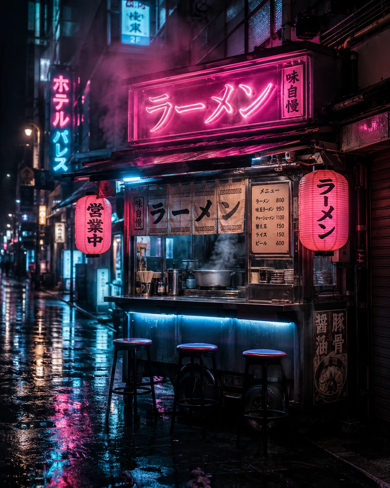
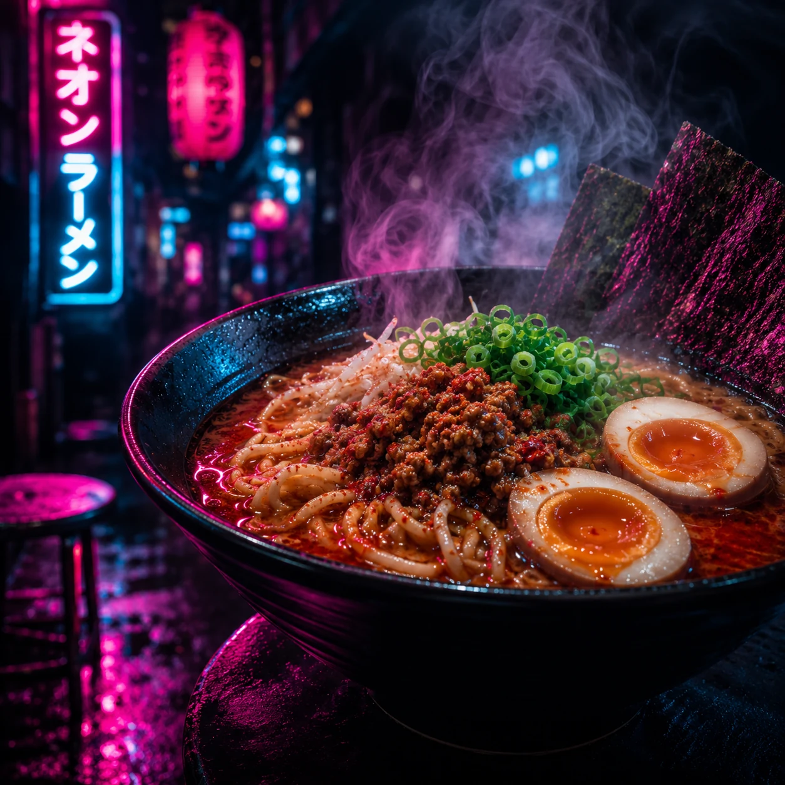

Pin 01
OPEN NOW
Causeway Bay
Tin Lok Lane, Causeway Bay
Located in the heart of Causeway Bay. Easy pickup, bold flavors, zero wait. Lock the cart now and head straight to the terminal.
Directions
View on map
2-min walk from Causeway Bay MTR Exit E.
Featured ramen

Spicy miso
HK$82